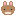

Размножение кроликов
Две морковки — и кролики встают «паровозиком»: три секунды тряски, затем задний отлетает ровно на два блока и лежит вверх ногами до десяти секунд. Гостевой пункт от Мистера К.

Накорми обоих
Стенд повторяет порядок тиков исходника: поза начинается на следующий тик после того, как оба кролика в любви, — не тогда, когда ваниль выдаст детёныша.
Числа из исходника
ТАЙМЛАЙН ОДНОГО ПРОГОНА
Детёныш появляется по ванильной логике: ИИ размножения во время позы не отключался.
Заметки гостя
Почему поза видна сразу
Ваниль запускает размножение с задержкой, и событие появления детёныша приходит позже. Последовательность стартует по флагу «в любви» у обоих — паровозик виден все три секунды, а не последние кадры.
Кто создаёт сцену
Оба кролика получают LivingTick-событие, но последовательность создаёт только одно из них: сравнение UUID отбрасывает второе, чтобы сцена не задвоилась.
Отлёт — телепорт, не импульс
Задний кролик не получает скорость: его координаты устанавливаются ровно на 2 блока позади исходной точки, скорость обнуляется, навигация останавливается. ИИ выключается только на время оглушения.
Как рендер узнаёт про «вверх ногами»
XRot = 180° синхронизируется обычными пакетами поворота; для рендера есть публичная проверка isUpsideDown по отклонению питча от 180°.
Направление паровозика
Вектор берётся от Б к А; если кролики стоят в одной точке, направление выбирается случайно. Обаyaw выставляются по этому вектору — А всегда спиной к Б.